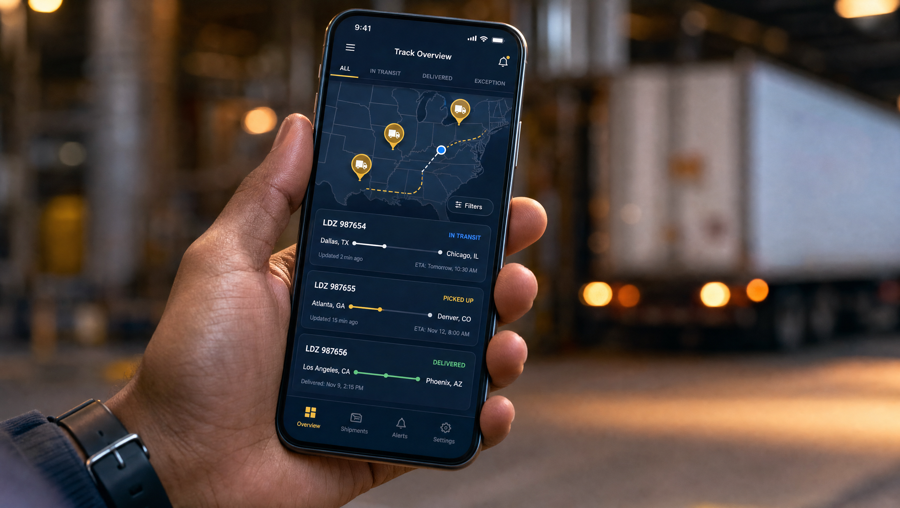
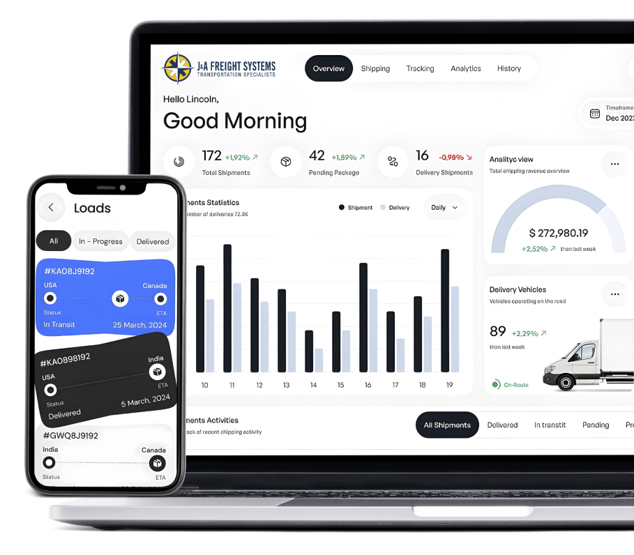

Our innovative platform leverages advanced tracking systems, real-time data analytics, and seamless integrations to optimize efficiency and ensure reliable delivery.

Every tool in our stack is designed to give you — and our team — a speed and visibility advantage other brokers can't match.

Rating, booking, tendering, and settlement on a single enterprise platform — configured for your routing guide, not a generic template.
ELD and GPS-fed location data on every load, with automated milestone alerts to you and your customers.
204/214/210 EDI or modern REST APIs into your ERP, WMS, or e-commerce stack. Your systems stay the source of truth.
Automated invoice matching catches accessorial errors before they hit your AP — most clients recover 2–4% of spend.
Authority, insurance, and safety scores re-verified automatically. A lapsed carrier is removed before the next tender.
Lane benchmarks, carrier scorecards, and spend trends delivered in quarterly business reviews — and on demand in the portal.
Our Best In Class Transportation Management Software dashboard gives you live visibility into every load, every invoice, and every carrier — all in one place.

Software doesn't answer the phone when a truck breaks down in a snowstorm. Our platform exists to make our people faster — every alert, exception, and data point routes to a named expert who owns the outcome.
How our TMS, tracking, and integrations work for your team.
We run a best-in-class Transportation Management System (TMS) that handles quoting, booking, carrier tendering, tracking, documents, freight audit, and analytics in one place. Shippers and carriers get their own portal access.
Yes. Location updates are fed by carrier GPS and ELD data, and exceptions trigger a human response from a named J&A expert within minutes, not the next business day.
Yes. We support EDI and API integrations for tenders, status updates, and invoicing so freight data flows into the systems your team already uses. Tell us what you run and we will scope the connection.
Lane, carrier, and accessorial reporting refreshed daily in the portal, plus freight audit on every invoice and quarterly business reviews that turn shipping data into savings on the next quarter's lanes.
No. Every client gets portal access plus a direct line to their J&A representative. Use whichever channel fits your team.
Carriers receive rate confirmations, load packets, and document uploads through the carrier portal, with digital PODs and e-signatures so drivers spend their hours driving instead of waiting.
Get a live walkthrough of our TMS — real-time tracking, instant rating, and freight audit built for mid-market shippers.